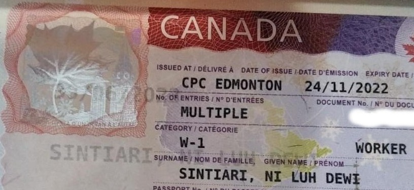
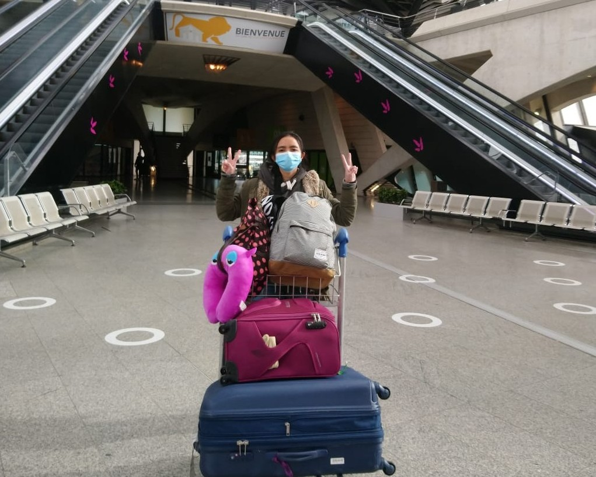
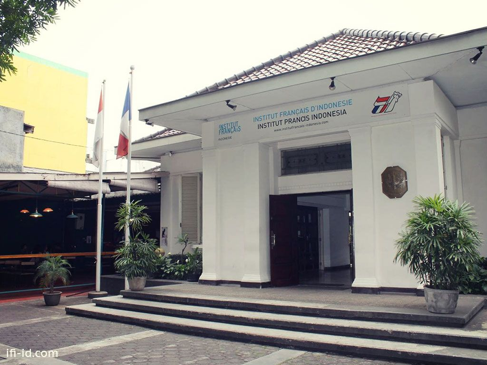

Goes to Canada part 3: First week in Waterloo
Thread terakhir dari cerita perjalananku ke Waterloo. Hujan salju dua malam terakhir masih menyisakan salju yang cukup banyak. Mungkin sebagian sudah berubah menjadi es. Jadi nampaknya jalanan masih agak licin, so lebih baik kita habiskan pagi ini dengan bercerita.

Goes to Canada part 2: Long trip Bali-Waterloo
Malam ini adalah malam ke-sepuluhku di Waterloo. Karena aku masih struggle dengan jet-lag dan insomnia, aku ingin menghabiskan waktu dengan bercerita tentang perjalananku hingga sampai di Waterloo. Untuk proses pembuatan VISA, dapat dibaca pada tulisanku di thread pertama.

Goes to Canada part 1: Break the limit!
Kali ini aku ingin berbagi tentang cerita perjalananku ke Waterloo, Kanada. Setelah hampir dua tahun lamanya berdiam diri di rumah, sekarang tiba saatnya aku pergi lagi. Tujuanku ke Waterloo adalah untuk melaksanakan short post-doctoral di Wilfrid Laurier University. Rencana ini sudah diundur beberapa kali. Sempat ragu-ragu, namun akhirnya aku putuskan untuk pergi.

Memorable weekend in the sky
Cerita ini tidak pernah tebayangkan sekalipun akan terjadi padaku di masa-masa akhir studi S3-ku di Prancis, bahkan mungkin seumur hidup. Meskipun sudah satu setengah tahun berlalu, tapi detail setiap peristiwanya masih teringat jelas dan nampaknya akan membekas untuk waktu yang lama. Ini adalah cerita tentang kepulanganku dari Prancis kembali ke Indonesia.

My journey part 3: Allez, allez, allez!
Setiap langkah menyusuri bandara Ngurah Rai terasa berat hari itu. Bahkan sejak hari-hari sebelum hari-H. Minggu berganti hari, hari berganti jam, dan rasanya jam berputar terlalu cepat, satu jam segera berubah menjadi menit-menit, dan detik-detik yang terasa saling berkejaran. Sampaikah aku di Prancis? Ini adalah tulisan terakhir dari thread cerita perjalananku.

My journey part 2: Bandung, kota kenangan, kota perjuangan
Bandung - memang hanya persinggahan, tapi ia menjadi saksi tentang pahit dan manis, tentang lelah dan lega. Aku menyimpan rindu. Tulisan ini adalah lanjutan dari part 1 thread perjalananku studi ke Prancis.

My journey part 1: Sang pemimpi
Di thread ini, aku ingin membagi sedikit cerita perjalananku hingga sampai di Prancis. Karena cukup panjang, jadi kisahnya aku bagi dalam 3 bagian. Semoga tulisan ini dapat menginspirasi.

Exploring Banyuwangi - Pantai Pulau Merah yang eksotis
Kali ini, saya ingin bercerita tentang suatu pantai berpasir putih yang indah di pesisir selatan Banyuwangi. Yap, seperti yang sudah tertulis pada judul tulisan ini, saya ingin menceritakan tentang "Pantai Pulau Merah" atau "the Red Island Beach".

Exploring Banyuwangi - Bermalam di Ijen
Siang itu, ditemani semangkok mie ayam bakso dan segelas jus buah naga, kami mengobrol ringan dengan dua pemuda yang kebetulan kami temui di warung makan pinggir jalan. Mereka baru saja kembali dari pendakian ke gunung Ijen. "Gimana kalau kita ke Gunung Ijen malam ini?" - ide itu terlontar begitu saja.

One day trip to Geneva
Hari itu tanggal 4 Juli 2019, aku bangun pukul 05.00, waktu yang cukup pagi (di Prancis) untuk memulai aktivitas. Bersama Cindy, kawanku, aku akan melakukan one-day trip ke Geneva!